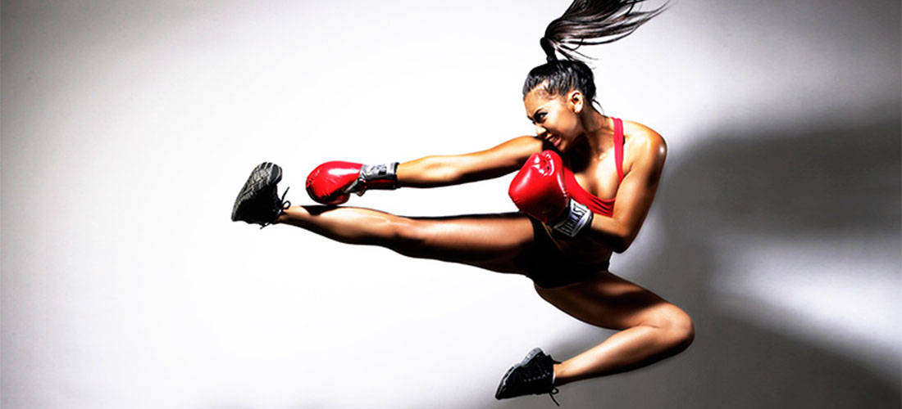

Name of sport:Football
Training:twice during the weekdays and once at the weekend
Team name:Carrig
Achievements thus far:
won three Sciath na Scol finals with St.John National Girls School
Won two Munster and county football final with my secondary school in 2013 and 2014
Won all Ireland medal with county football team in 2014
Kickboxing is a group of stand-up combat sports based on kicking and punching, historically developed from Karate but the modern kickboxing is mixed by taekwondo and boxing. Kickboxing (particularly Cardio Kickboxing) is an aerobic form of exercise that helps strengthen and condition your body. It is a martial arts sport that will help you get fit and provide health benefits, such as reduced body fat, increased flexibility and strengthened heart. Kickboxing improves your balance and builds body strength. To minimize risk of injury and maximize workout results you should start with a warmup and learn the basic skills and movements from an instructor
I have always enjoyed fashion and the art of sewing. It all began and the young age of 8. I would watch my mom make coats and adjust items of clothing for us. I began also atering and adjusting my clothes. And from there my love for fashion flourished. I spent a large amount of my time researching fashion trends and reading fashion blogs. One of my favourite fashion blogger at the moment is Just Jordan click link to find her lastest blogs ---> JUST JORDAN